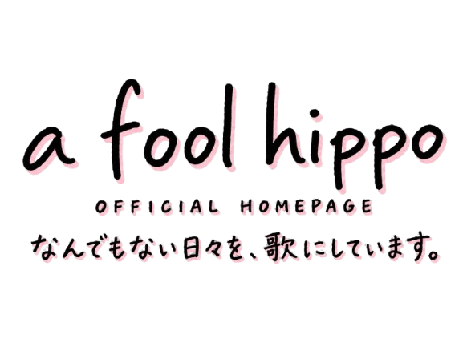

ABOUT
a fool hippo
について
上から読んでも、下から読んでも、バカなカバ。
福岡・箱崎を拠点に、ありふれた日常風景や食べものを題材にした歌を作っています。
ギターによる弾き語りや宅録を中心に、イラストを描いたり、ブラウザゲームを作ったり。これまでに作った曲は約500曲。
町のどこかで見つけた、少し変なものや何でもない出来事を歌にしています。

ABOUT
上から読んでも、下から読んでも、バカなカバ。
福岡・箱崎を拠点に、ありふれた日常風景や食べものを題材にした歌を作っています。
ギターによる弾き語りや宅録を中心に、イラストを描いたり、ブラウザゲームを作ったり。これまでに作った曲は約500曲。
町のどこかで見つけた、少し変なものや何でもない出来事を歌にしています。